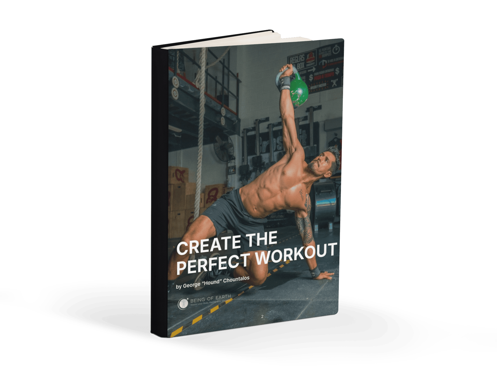
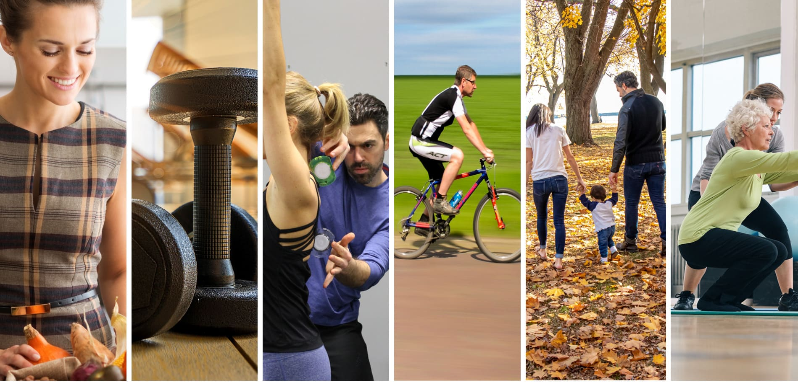

Stop guessing with one-size-fits-all health advice. Being of Earth is an educational system that teaches you how your movement, mindset, nutrition, and recovery work together—giving you the guided self-assessments, practical tools, and step-by-step courses to build a sustainable, resilient lifestyle on your own terms.
The problem isn't a lack of information. It's knowing what is truly right for your unique body, lifestyle, and history.
Generic workout splits and dogmatic diets treat human bodies like factory machines. What builds strength for a 22-year-old athlete can wear down connective tissue, spike stress hormones, and trigger burnout in an adult balancing work, stress, and family.
When your lower back aches or your energy drops, stretching a tight spot or popping a supplement only silences the alarm without addressing the fire. Lasting change requires understanding how your movement, stress, digestion, and daily habits interconnect.
You are conditioned to outsource your physical autonomy to temporary quick fixes and passive treatments. Experts offer valuable guidance, but lasting vitality only happens when you learn to understand your own body, recognize your patterns, and make informed decisions yourself.
My goal isn't to give you another workout routine, diet, or list of health rules to follow. It's to help you understand yourself so you can make informed decisions about your health, happiness, and performance for the rest of your life.
Your health is shaped by more than exercise or nutrition alone. How you move, eat, think, manage stress, and recover all influence how you feel and function. The Being of Earth approach helps you understand how these areas work together to create a balanced, personalized path to lifelong vitality.
 01
01
Understand how your body moves and learn to build functional strength, mobility, and confidence. We identify rotational imbalances and strengthen antagonist muscle groups to restore fluid, resilient movement patterns without joint burnout.
 02
02
Move past dogmatic diets and calorie counting. Learn how whole foods fuel your energy, support cellular recovery, and fit your individual daily needs while clearing systemic inflammation so soft tissues regenerate naturally.
Understand how thoughts, beliefs, emotions, and stress influence your physical tension and everyday choices. Incorporate somatic down-regulation, vagus nerve balance, and mindset repatterning to shift your nervous system out of chronic survival into calm clarity.
 04
04
Growth and repair happen when the body is in genuine rest. Discover how restorative deep sleep, natural circadian rhythms, and active recovery habits rebuild your body, support soft-tissue recovery, and sharpen your daily mental performance.
Not sure where to begin? That's exactly why we created the Being of Earth Blueprint. Through guided self-assessments, you'll audit your movement, nutrition, mindset, and recovery to discover your strengths, identify what's holding you back, and create a clear roadmap toward your goals.
Select the area that restricts your vitality, confidence, or daily well-being most often:
Duration helps determine whether you need an acute reset or deep foundational repatterning:
Identifying past bottlenecks helps us tailor a truly personalized starting roadmap:
Your responses indicate a pattern rooted in our Four Pillars framework.
Inside the Being of Earth Academy, your personalized starting roadmap includes:
Includes full access to the Being of Earth Blueprint, weekly live coaching with George, and all Four Pillars courses.

FREE 12-PAGE PDFDownload George's introductory movement field guide: "Create the Perfect Workout." Learn the exact 5-step movement diagnostic to test your own joint mobility before lifting a single weight or starting a workout.
The Being of Earth Membership brings together education, self-assessments, practical tools, and ongoing live mentorship to help you build a healthier, happier, and more balanced life.
Discover where you are today, identify your priorities, and create a clear roadmap that guides your health journey across all Four Pillars.
Explore step-by-step courses covering movement (Assess & Stretch, Master Your Core), mindset (Master Your Mind), nutrition, and restorative sleep.
Turn what you learn into daily action with self-assessments, reflection exercises, and movement checks you can apply to everyday life.
Bring your movement questions, form challenges, and lifestyle obstacles directly to George in live interactive Q&A coaching sessions.
Connect with a dedicated tribe of adults committed to self-sufficiency, functional longevity, and personal ownership in a focused space.
Access your courses, reflection tools, and community discussions from your computer, tablet, or phone via GoHighLevel's clean member app.

After more than 20 years of working with people to improve their health and physical performance, I've learned that lasting progress requires much more than following a generic workout routine or nutrition plan.
In the early days of my career, I ran the standard fitness playbook: pushing through fatigue and prescribing one-size-fits-all routines. Over time, I saw how that mindset led to breakdowns—not just physical injuries and joint flare-ups, but chronic stress, mental exhaustion, and frustration.
Our health is shaped by how we move, what we eat, how we think, how we manage stress, and the daily habits we build. I created Being of Earth to bring these essential pieces together into one connected educational system.
My mission is simple: to help you better understand yourself, develop the knowledge and confidence to make informed decisions, and take greater ownership of your health and happiness. Because the greatest success isn't needing a coach forever. It's learning how to make better decisions for yourself.
Read how members restored functional mobility, built mental clarity, and reclaimed physical confidence.
“Years of desk work and aggressive lifting had my lower back completely seized up. George didn't give me generic stretches; he showed me how my hip rotation was shut down. Within three weeks, my mobility unlocked and my posture transformed.”

“I spent thousands on physical therapy and chiropractic care for impinged shoulders. George’s educational approach taught me how to stabilize my scapula and understand my movement. Being of Earth is the best health investment I've ever made.”

“The Four Pillars framework changed how I view my entire daily life. Combining nervous system breathwork with George’s anti-inflammatory guidelines cleared my mental fatigue and gave me sustained energy all day.”
Get full access to the Being of Earth Blueprint, comprehensive course library, practical tools, weekly live coaching with George, and a supportive community.
Past 1-on-1 Client of George? You are eligible for our lifetime Legacy Rate of $25/month. Reach out via WhatsApp or email before enrolling to claim your unlisted discount link.
Everything you need to know about the Being of Earth Academy, the Blueprint, and your membership.
Most fitness apps offer static workout templates or generic meal logs without teaching you why your body responds the way it does. Being of Earth is an educational system. We guide you through self-assessments to understand your own body, movement, mindset, and recovery—empowering you to make informed decisions and coach yourself for life.
The Free Workout Guide ("Create the Perfect Workout") is an introductory 12-page PDF focused on practical movement diagnostics before exercising. The Being of Earth Blueprint is our comprehensive flagship onboarding course inside the membership. It audits all Four Pillars—Movement, Nutrition, Mindset, and Recovery—to build your personalized health roadmap.
Yes. In fact, Being of Earth was built specifically for adults whose bodies have felt battered by high-impact gym routines. George’s background in kinesiology emphasizes joint decompression, antagonist muscle balance, and rotational stability. You will learn how to test your mobility first and work within your body's safe thresholds.
The curriculum is designed for busy adults. Most daily routines and educational modules take between 15 to 25 minutes. Weekly live coaching calls are recorded and archived inside the portal if you cannot attend live.
When you enroll, you receive immediate 100% free access to all courses, assessments, live coaching, and the community for 14 days. If it's not the right fit, you can cancel inside your member profile with a single click before day 14 and you will never be charged.
If you have worked with George 1-on-1 in the past, tap the WhatsApp button or email info@beingofearth.com with your name. We will verify your client history and send you a private, unlisted enrollment link with the lifetime $25/month locked in.